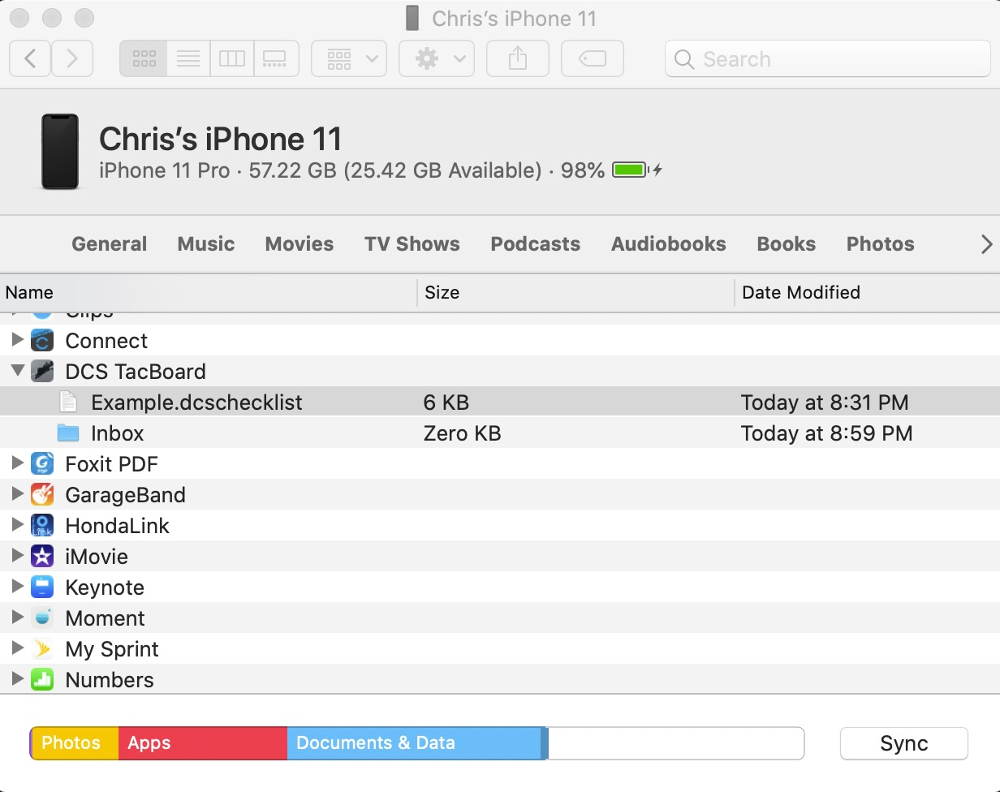
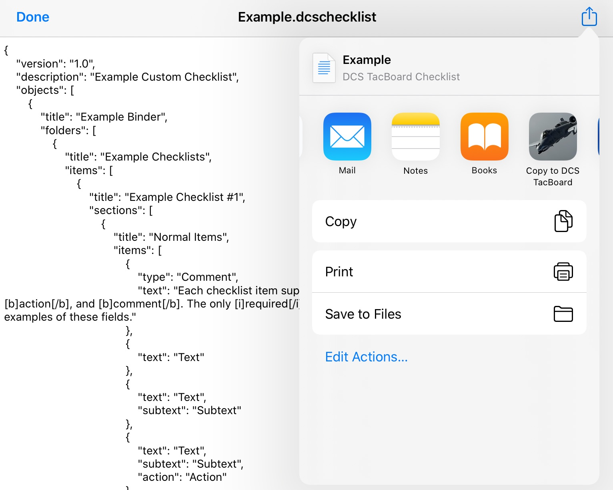

DCS TacBoard
Contents
Beta Information
Thank you for helping with the DCS TacBoard beta. Please remember that this is a beta version! It is not complete, and is missing content and features which will be present in the initial release. You can send bug reports, comments, suggestions, and criticisms via any of the following methods:
The following features have not yet been implemented, but are planned to be completed before the first official release:
- "Simplified" checklist mode for experienced pilots
- Built-in checklists for additional aircraft models (starting with F/A-18C and Black Shark)
- Airport info for all terrain regions (starting with Persian Gulf and Syria)
- Additional reference pages with both aircraft-specific and general information
- Complete help file describing all app features
- Cosmetic improvements to make the app look nicer
Help Wanted
I need help with adding content to the app! If you would like to submit checklists, charts, or reference material, please let me know.
Features
Checklists
TODO - complete help section.
Airports
TODO - complete help section.
Notepad
TODO - complete help section.
Reference
TODO - complete help section.
Custom Checklists
You can create your own checklist files and add them to the app, or download and use checklist files that others have created.
Checklist File Format
Checklists are simple JSON files. They must have the .dcschecklist file extension in order to be recognized by the app.
There is an example checklist file showing the format and several usage examples on GitHub at this link. When creating a new checklist, you can start with this file and update or add to it as needed. For a more comprehensive example, the full default checklists used by the app are available here.
Adding Files to the App
There are several options available to add custom checklists to the app.
- AirDrop the .dcschecklist file to your iPhone or iPad. DCS TacBoard will automatically open and import the checklist.
- Transfer the file directly to the app. This can be done using the Finder app on MacOS or using iTunes on Windows.

- E-mail the file to yourself as an attachment. Open the attachment in your e-mail app, then select the Share button, then Copy to DCS TacBoard.

Managing Custom Checklists
You can view all of your currently installed custom checklists from the Home → About → Custom Files page. On this page you can view the errors for any files which were not successfully loaded, as well as delete any files that you no longer want to use.
Version History
Version 0.2.0
- Add support for custom user checklists. See above for details on how to create new checklists.
- Add Ka-50 startup checklist by hypafrag. Enable Ka-50 by default.
- Fix several minor cosmetic bugs.
Version 0.1.1
- App is now open source! The repo is available at https://github.com/xchrishawk/TacBoard. Feel free to add issues or comments, or submit new content.
- Add option to immediately check for a data update. This is found in Home → About, underneath the currently active data versions.
- Save current checklist state (i.e., the currently "completed" items) when the app is killed.
- Add confirmation before clearing a notepad page.
- Add in-air refueling and CMSP checklists for A-10C, and correct several typos, errors, and omissions.
- Fix numerous bugs related to data indices changing while the app is running.
- Minor cosmetic improvements to the app.
Version 0.1.0
- First beta release of DCS TacBoard.
- Includes all basic functionality for checklists, airports, notepad, and reference pages.
- Content is currently limited to the A-10C Warthog aircraft module and the Caucasus and Nevada terrain modules. More content will be added soon!
Credits
The following individuals have contributed to the development of DCS TacBoard:
- xchrishawk - App design and code, A-10C checklists, reference documents
- hypafrag - Ka-50 checklists
The information contained in this app has been pulled from a huge variety of sources. I would particularly like to thank the following groups and individuals for generously sharing their work for the benefit of the DCS community: